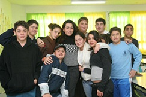

Organization's Website: youthrenewalfund.org
"Youth Renewal Fund was established in 1989 to provide supplemental education to underprivileged children in Israel."
The Youth Renewal Fund helps low-income communities in Israel by educating underprivileged children. This includes a tutoring program, and a training program for teachers. The Youth Renewal Fund also has smaller programs. These include single-subject, free-standing learning centers, in-school learning centers, partnership projects, and scholarship programs for YRF alumni attending college.
-
Recent research conducted by the Ministry of Education showed that 30% of Israeli 6th grade students cannot read at grade level and nearly 75% of Israeli 8th graders cannot perform basic math calculations.
-
The most recent PISA (Programme for International Student Assessment) exam given in 64 industrialized countries ranked Israeli students' performance 36th in literacy and math, and 41st in science.
-
88% of YRF students finish high school on the general academic track (as opposed to vocational studies), compared with the national average of 55% for low-income students.
-
Over 850,000 of the country's 2.4 million children (approximately 35%) were living below the poverty line at the beginning of 2009, according to studies conducted by the Israeli National Insurance Institute (NII).